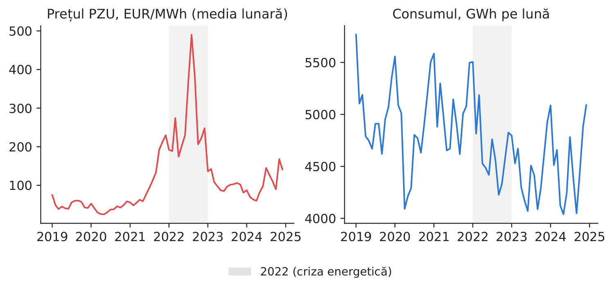
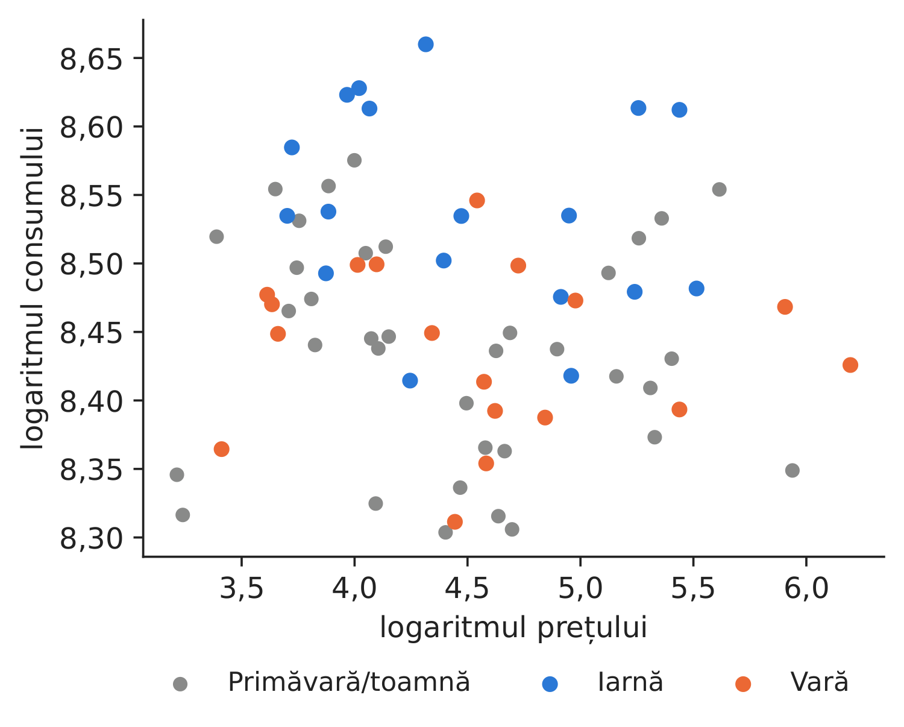
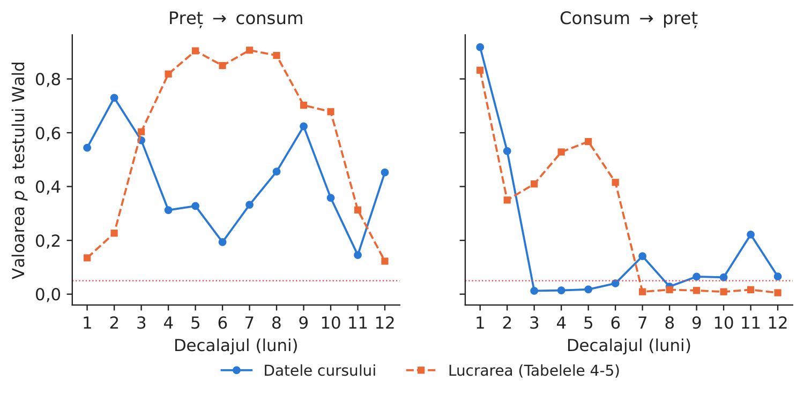
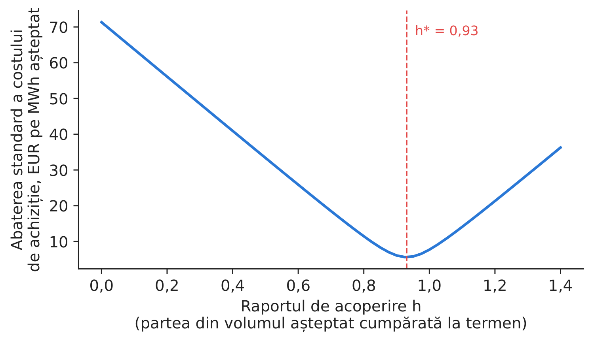

Studiul de caz 5 · Cursul 5
Reacția cererii de energie electrică la preț — elasticitatea, cauzalitatea și raportul de acoperire al furnizorului
Prof. dr. Daniel Traian PELE
Academia de Studii Economice din București, Departamentul de Statistică și Econometrie
Academia Română, Institutul de Prognoză Economică
Lucrarea de referință
Proșcanu, C., Proșcanu, M. și Pele, D. T. (2025). The price elasticity of electricity demand in Romania. Journal of Social and Economic Statistics, 14(2), 131–141. doi:10.2478/jses-2025-0009
Problema decizională
Un furnizor din România încheie, pentru anul următor, contracte cu preț fix pe un an cu consumatori casnici și cu firme mici. Pentru a-și asigura marja, cumpără la termen volumul așteptat (direct sau printr-un PPA, contract de achiziție de energie electrică pe termen lung) și cumpără sau vinde diferența pe piața pentru ziua următoare (PZU). Responsabilul cu administrarea portofoliului trebuie să stabilească raportul de acoperire, adică ce parte din volumul așteptat se cumpără la termen. Dacă clienții și-ar reduce consumul atunci cînd prețurile cresc brusc, o acoperire parțială ar fi suficientă (riscul de volum s-ar compensa parțial de la sine); în caz contrar, furnizorul trebuie să acopere aproape tot volumul. Așadar: reacționează cererea din România la preț?
De ce această lucrare la cursul 5. Elasticitatea este o mărime de intrare pentru stabilirea raportului de acoperire și a clauzelor de volum din contractele de furnizare și din PPA-uri. Cercetarea complementară a grupului nostru, Shahar, Lessmann și Pele (2025, arXiv 2507.12331), arată că liberalizarea pieței cu amănuntul din SUA (Statele Unite ale Americii) a redus prețurile pentru consumatorii casnici cu aproximativ 7 % pe termen scurt — o perspectivă asupra organizării pieței, pe date din statele americane; acest studiu de caz se concentrează pe achizițiile de energie din România.
Lucrarea de referință
Întrebarea de cercetare. Care este relația de cauzalitate dintre consumul de energie electrică și preț în România și cît de elastic este consumul în raport cu prețul (rezumat; p. 134)?
Datele. Prețul (EUR/MWh) și consumul lunar din România, ianuarie 2019 – decembrie 2024, 72 de observații, din sursele Ember și Statista (p. 133); prețul mediu 112,13, maximul 490,80 (Tabelul 1).
Metoda. Teste de rădăcină unitară Dickey–Fuller augmentate (ADF); o regresie a logaritmului consumului în funcție de logaritmul prețului, cu erori ARMA sezoniere (SARIMA (ARIMA sezonier): AR(1), SAR(12), MA(1), SMA(12)); teste de cauzalitate Granger într-un model vectorial autoregresiv (VAR), cu decalaje de la 1 la 12 luni.
Principalele rezultate ale lucrării.
- Prețul este integrat de ordinul 1, iar consumul de ordinul 2 (Tabelele 2–3, p. 135–136).
- Elasticitatea estimată a consumului în raport cu prețul este pozitivă, dar foarte mică (0,056) și semnificativă la pragul de 1 % (p. 137); coeficientul este 0,055866, iar eroarea standard 0,017736 (Tabelul 7, p. 138).
- Cauzalitatea Granger este unidirecțională, de la consumul de energie electrică la preț (p. 137): de la preț la consum, niciun decalaj nu este semnificativ; de la consum la preț, sînt semnificative decalajele 7–12 (Tabelele 4–6, p. 136–137).
- Tarifele reglementate și contractele pe termen lung îi protejează pe consumatorii finali de fluctuațiile imediate ale prețului spot (p. 137); prin urmare, mecanismele de preț, luate singure, s-ar putea dovedi ineficiente în gestionarea cererii de energie electrică (p. 139).
Metoda, pas cu pas
Intuiția metodei
Elasticitatea răspunde la întrebarea: „Dacă prețul crește cu 1 %, cu cîte procente se modifică consumul?” Pentru un bun la care consumatorii nu pot renunța, răspunsul este aproape zero. Cauzalitatea Granger răspunde la o altă întrebare: „Îmbunătățesc valorile trecute ale lui \(X\) prognoza lui \(Y\)?” Ea privește capacitatea de prognoză, nu cauzalitatea în sensul obișnuit al termenului.
Fie \(C_t\) consumul (GWh) și \(P_t\) prețul mediu de pe piața pentru ziua următoare (EUR/MWh) în luna \(t\). Lucrarea estimează
unde \(\beta\) este elasticitatea, \(L\) este operatorul de decalaj (\(L u_t=u_{t-1}\)), \(\phi,\Phi\) sînt coeficienții autoregresivi nesezonier și sezonier, \(\theta,\Theta\) coeficienții de medie mobilă corespunzători, iar \(\varepsilon_t\) este un zgomot alb. Problema identificării: prețul și consumul se determină simultan, prin interacțiunea cererii cu oferta; într-o lună friguroasă, atît cererea, cît și prețurile sînt ridicate. Extensia noastră folosește metoda celor mai mici pătrate în două etape (2SLS, two-stage least squares): prețul gazelor \(G_t\) modifică costul centralei marginale (oferta) și presupunem că influențează consumul numai prin intermediul prețului; prin urmare, în prima etapă estimăm \(\ln P_t\) în funcție de \(\ln G_t\) și de variabile indicatoare pentru lunile anului, iar în a doua etapă estimăm regresia lui \(\ln C_t\) în funcție de valorile ajustate ale logaritmului prețului, obținute în prima etapă. Pentru acoperirea riscului, costul furnizorului pe MWh așteptat este \(Q_tP_t-h\,(P_t-F)\), unde \(Q_t\) este volumul raportat la plan, iar \(F\) prețul la termen; varianța acestuia este minimă pentru \(h^*=\mathrm{Cov}(Q_tP_t,P_t)/\mathrm{Var}(P_t)\). Pentru \(Q_t\equiv1\) (cerere perfect inelastică și plan perfect), \(h^*=1\).
În practică
La o elasticitate apropiată de zero, volumul nu scade atunci cînd prețul crește brusc: nu există o acoperire naturală, iar un furnizor cu contracte la preț fix ar trebui să cumpere la termen aproape 100 % din volumul așteptat.
Replicare pe datele cursului
Notebook-ul C5_notebook_RO.ipynb folosește consumul orar ENTSO-E (Rețeaua europeană a operatorilor de transport și de sistem pentru energie electrică), însumat lunar în GWh, și media lunară a prețurilor orare de pe piața pentru ziua următoare (energy-charts.info), ianuarie 2019 – decembrie 2024, adică 72 de luni — eșantionul lucrării;
prețul TTF (Title Transfer Facility) lunar (Banca Mondială) servește drept variabilă instrumentală. Prețul mediu din datele noastre este de 112,1 EUR/MWh (în lucrare: 112,13), iar maximul de 490,3 EUR/MWh (în lucrare: 490,80).

Figura 1. Prețul și consumul lunar; anul 2022 este evidențiat.
Sursa: energy-charts.info; 01.2019–12.2024.

Figura 2. logaritmul consumului în funcție de logaritmul prețului, pe anotimpuri.
Sursa: energy-charts.info; 01.2019–12.2024.
Tabelul 1. Elasticitatea consumului în raport cu prețul.
| Seria | Statistica ADF | Valoarea \(p\) (replicare) | Valoarea \(p\) (lucrarea) |
|---|---|---|---|
| Preț, nivel | \(-\)1,809 | 0,3759 | 0,3780 |
| Preț, prima diferență | \(-\)7,382 | 0,0000 | 0,0001 |
| Preț, a doua diferență | \(-\)7,729 | 0,0000 | – |
| Consum, nivel | \(-\)1,277 | 0,6396 | 0,5313 |
| Consum, prima diferență | \(-\)2,360 | 0,1534 | 0,1799 |
| Consum, a doua diferență | \(-\)10,811 | 0,0000 | 0,0001 |
| Estimarea | Elasticitatea | Eroarea standard | \(t\) |
|---|---|---|---|
| Lucrarea (Tabelul 7): erori SARIMA, 2019–2024 | 0,0559 | 0,0177 | 3,15 |
| Replicare: aceeași specificație | 0,0644 | 0,0182 | 3,53 |
| Replicare: MCO (metoda celor mai mici pătrate) + variabile indicatoare lunare | \(-\)0,0213 | 0,0134 | \(-\)1,60 |
| Replicare: 2SLS, prețul gazelor ca instrument | \(-\)0,0231 | 0,0109 | \(-\)2,12 |
Sursa: calcule proprii; valorile din lucrare provin din Tabelele 2, 3 și 7. „0,0000” înseamnă o valoare sub 0,00005.
Ce arată datele. Testele de rădăcină unitară confirmă rezultatele lucrării (prețul: \(p = 0,376\) în nivel; consumul rămîne nestaționar după prima diferențiere, \(p = 0,153\)). Cu specificația din lucrare obținem o elasticitate de 0,0644 (eroarea standard 0,0182), apropiată de valoarea de 0,0559 din lucrare — pozitivă și mică. Extensiile noastre conduc la \(-\)0,0213 (eroarea standard 0,0134) cu variabile indicatoare pentru lunile anului în locul erorilor ARMA sezoniere și la \(-\)0,0231 (eroarea standard 0,0109) cu prețul gazelor ca variabilă instrumentală (statistica \(F\) din prima etapă: 1.382,4). Toate variantele transmit managerului același mesaj: cererea aproape nu reacționează la preț (o creștere a prețului cu 10 % modifică consumul cu mai puțin de 1 %). Testele Granger: prețul nu îmbunătățește prognoza consumului pentru niciun decalaj (cea mai mică valoare \(p = 0,145\)); consumul îmbunătățește prognoza prețului pentru 5 din cele 12 decalaje (cea mai mică valoare \(p = 0,012\), la decalajul 3) — aceeași direcție ca în lucrare, unde sînt semnificative decalajele 7–12.

Figura 3. Valorile \(p\) ale testelor Granger, pe decalaje, în replicarea noastră și în lucrare; linia punctată: 5 %.
Sursa: modelul nostru VAR pe date energy-charts.info; lucrarea, Tabelele 4–5.

Figura 4. Riscul costului de achiziție în funcție de raportul de acoperire.
Sursa: calcule proprii, date lunare 2016–2025.
Cifra relevantă pentru decizie. Dacă planul de volum este consumul din aceeași lună a anului precedent, abaterea neanticipată a volumului și prețul au o corelație de \(-\)0,31 pe 120 de luni; raportul de acoperire cu varianță minimă este \(h^* = 0,93\), iar acoperirea la nivelul \(h^*\) elimină 92,1 % din abaterea standard a costului de achiziție (în eșantion: \(h^*\) este estimat și evaluat pe aceleași luni). În afara eșantionului, \(h^*\) estimat pe perioada 01.2016–12.2020 (1,06) și aplicat perioadei 01.2021–12.2025 elimină 81,3 %. Cumpărați la termen aproximativ 0,93 din volumul așteptat; un portofoliu de clienți cu cerere elastică în raport cu prețul ar justifica un raport mai mic, dar nu acesta este cazul în datele noastre.
Întrebări pentru discuție
- Cum ați face distincția între o estimare agregată a relației preț–consum și reacția unui client individual la modificarea tarifului? Ce date suplimentare ar sprijini proiectarea contractelor pentru clienții cu consum flexibil?
- Prețurile pentru consumatorii casnici au fost plafonate din 2022 pînă la jumătatea anului 2025. Cum modifică plafonarea prețul resimțit efectiv de consumator și ce efect are asupra elasticității măsurate?
- Care dintre clienții dumneavoastră au o cerere elastică în raport cu prețul (industria cu procese flexibile, încălzirea electrică, încărcarea vehiculelor electrice)? Cum ați evalua această flexibilitate într-un contract?
- Raportul dumneavoastră de acoperire este 0,93. Ce se întîmplă cu furnizorul dacă acoperă numai 70 % din volum și urmează un an asemănător cu 2022?
- „Consumul este cauză Granger pentru preț” — cum ați folosi acest rezultat într-un model de prognoză pentru departamentul de tranzacționare (vedeți studiul de caz 2)?
Limitele replicării
(i) Folosim 72 de observații lunare și un singur regresor, fără a include temperatura ca variabilă de control. (ii) Prețul este cel angro, nu tariful cu amănuntul plătit de consumatori (adesea plafonat sau fix). (iii) Identificarea: prețul și consumul agregat se determină simultan; instrumentul ales trebuie să influențeze consumul numai prin intermediul prețului (prețul gazelor poate afecta însă și activitatea industrială). (iv) Raportul de acoperire presupune un contract la termen cu preț fix pentru întregul an și ignoră riscul de profil analizat în studiul de caz 4.
Studiul de caz 5 pe scurt
- ÎntrebareScade cererea atunci cînd crește prețul și ce parte din volum ar trebui să acopere un furnizor?
- DateConsumul lunar din România (GWh) și prețul PZU, 2019–2024 (72 de luni); prețul gazelor TTF.
- MetodăADF; regresie log–log cu erori SARIMA; 2SLS cu prețul gazelor ca instrument; Granger; acoperire cu varianță minimă.
- RezultatElasticitatea: 0,0644 (lucrarea: 0,056); cu prețul gazelor ca instrument: \(-\)0,0231. \(h^* = 0,93\).
- DecizieNu există o acoperire naturală: cumpărați la termen aproape tot volumul așteptat.

Sursa: calcule proprii pe date energy-charts.info, date lunare 2016–2025.
Abrevieri
| ADF | Dickey–Fuller augmentat |
|---|---|
| AR | autoregresiv |
| ARIMA | model autoregresiv integrat cu medie mobilă |
| ARMA | model autoregresiv cu medie mobilă |
| ENTSO-E | Rețeaua europeană a operatorilor de transport și de sistem pentru energie electrică |
| MA | termen de medie mobilă |
| MCO | metoda celor mai mici pătrate |
| PPA | contract de achiziție de energie pe termen lung |
| PZU | piața pentru ziua următoare |
| SAR | termen autoregresiv sezonier |
| SARIMA | ARIMA sezonier |
| SMA | termen sezonier de medie mobilă |
| SUA | Statele Unite ale Americii |
| TTF | Title Transfer Facility |
| VAR | model vectorial autoregresiv |
Textul, cifrele, graficele și tabelele acestei pagini sînt cele ale studiului de caz; toate cifrele sînt calculate de notebook-ul studiului pe datele cursului.